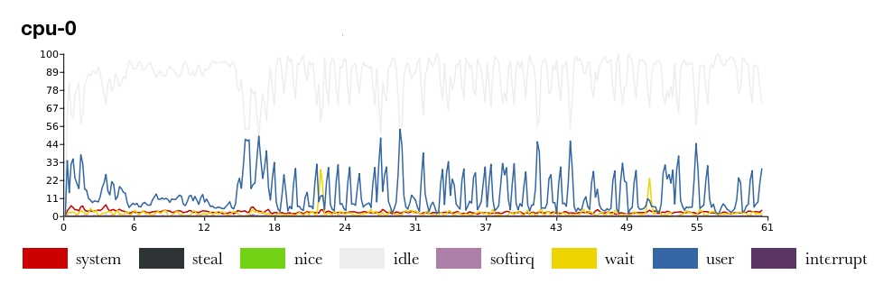

Visage is a web interface for viewing collectd statistics.
It also provides JSON interface onto collectd's RRDs, giving you an easy way to mash up the data.
Code and install instructions live on GitHub.
Here's an example: 